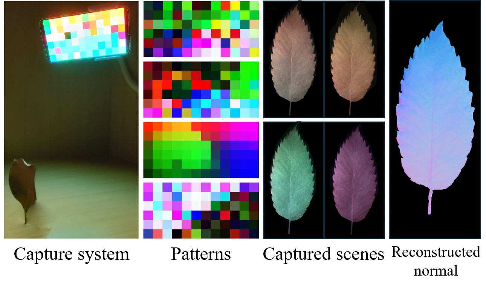
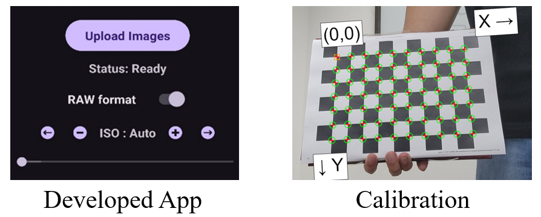
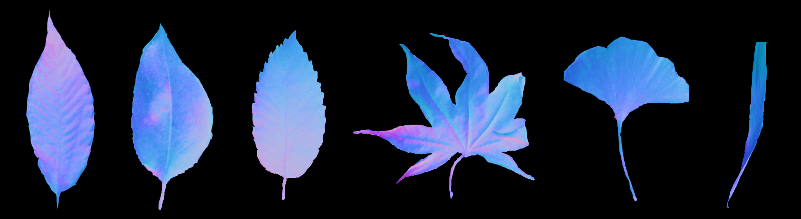

Abstract
Display photometric stereo reconstruct surface normal under diverse illumination patterns by using monitor. Recently, differentiable display photometric stereo (DDPS) demonstrated the improved normal reconstruction accuracy by learning display patterns. However, previous method faced several limitations, such as requiring a completely dark room and a fixed shooting setup due to the use of specialized equipment like polarization cameras and LCD monitors. In this paper, we propose differentiable mobile display photometric stereo (DMDPS) which extended DDPS by leveraging mobile devices and high-dynamic-range (HDR) imaging, enabling flexible shooting locations and eliminating the need for a dark room. We developed an app to simultaneously display and capture patterns. DMDPS learns the patterns to be displayed through this app and establishes an accurate surface normal of an object. For training supervision, the system learns patterns using a real-world 3D-printed object and a corresponding base pattern. Additionally, we have created a database of reconstructed surface normals and albedos of wild objects (fall leaves) and disclose them. When the unlearned pattern was used, the reconstruction error of 0.07394 was shown, but when the learned pattern was used, the error decreased to 0.05337. Using a mobile device (e.g., Samsung Galaxy S22) for image capture, the method allows for high-quality surface normal estimation in general settings without the restrictive conditions of a controlled environment.
DDPS
DDPS is a work focused on designing patterns to be displayed and learning those patterns for accurate surface normal reconstruction of objects. It is broadly divided into three stages: database acquisition, pattern learning, and testing. First, during the database acquisition stage, base-illumination images of 3D-printed objects are captured, and ground-truth surface normal maps are obtained using 3D modeling files. Next, in the pattern learning stage, patterns optimized for high-quality surface normal reconstruction are learned through a real-world training dataset. Finally, during the testing phase, various real-world objects are photographed using the learned patterns, and their surface normals are reconstructed.
Mobile Display Imaging
As the filming proceeded on mobile, the following problems arose. Shared Device for Pattern Display and Image Capture, Raw Image Requirement, Reduced Light Intensity, Adjustable Exposure Time for Light Control. To address these challenges, we developed app for DMDPS. Additionally, through calibration and undistortion, the increased photograph distortion of the mobile camera was corrected.

In-Wild dataset
We applied DMDPS to in-wild objects, especially leaves, and showed high quality surface normal reconstruction. We obtained and disclose surface normal and albedo of various leaves.

Citation
@article{choi2023differentiable,
title={Differentiable Mobile Display Photometric Stereo},
author={Gawoon Ban, Hyeongjun Kim, Seokjun Choi, Seungwoo Yoon, Seung-Hwan Baek},
journal={},
year={2025}
}